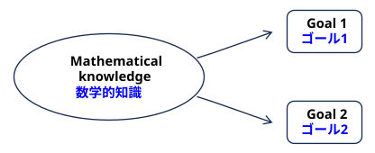
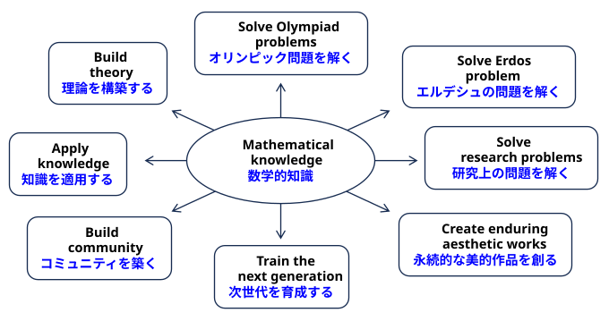
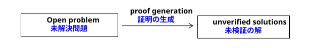
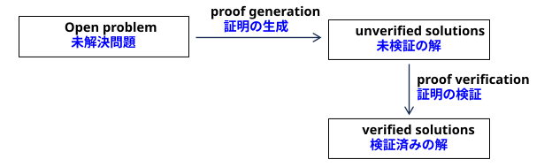
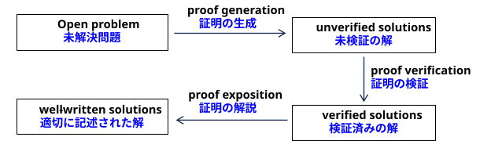
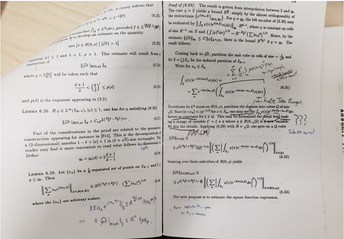
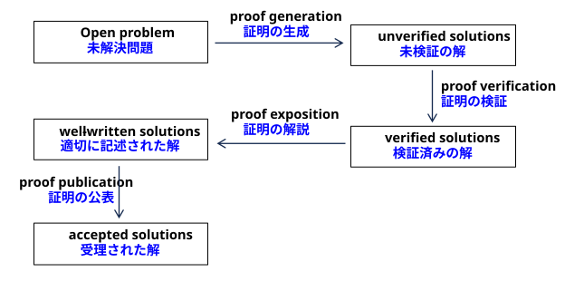

Abstract. An essay, based on a public lecture delivered at the 2026 International Congress
of Mathematicians, on how the mathematical community might respond to the arrival of
artificial intelligence tools that are capable of performing research-level mathematical tasks.
Rather than debating the capabilities of such tools, we condition on the hypothesis that
these capabilities will arrive, and examine instead a question that is orthogonal to it: what
the goals and values of mathematical research actually are. The problem-solving component
of mathematics is used as a case study.
要旨：本稿は、2026年の国際数学者会議（ICM）で行われた公開講演に基づく論考である。研究レベルの数学的タスクを遂行可能な人工知能（AI）ツールの登場に対し、数学コミュニティはいかに対応すべきかを探る。ここでは、そうしたツールの能力そのものを議論するのではなく、それらの能力が実現するという仮定を前提とした上で、それとは別の次元にある問い、すなわち「数学研究の真の目的や価値とは何か」について考察する。その際、数学における「問題解決」という側面を事例として取り上げる。
For centuries, mathematics operated successfully on “naive” foundations. Practicing
mathematicians proved theorems about sets, numbers, and infinities without feeling any
particular need to say precisely what these quantites actually were (or what a proof itself
was, for that matter); such questions were largely delegated to philosophers, and the working
mathematician was free to get on with the mathematics.
何世紀にもわたり、数学は「素朴な」基礎の上に立って順調に展開されてきた。数学者たちは、集合や数、無限といった対象が実際には何であるか（あるいは、そもそも「証明」とは何であるか）を厳密に定義する必要性を特に感じることなく、それらに関する定理を証明していたのである。そうした問いは主に哲学者に委ねられており、現場の数学者は数学の研究そのものに専念することができた。
But in the early twentieth century, discoveries such as Russell’s paradox in 1901 [14]
and the G¨odel incompleteness theorems in 1931 [8] forced mathematicians to critically reexamine assumptions about their subject that had previously been left implicit. The axioms
of naive set theory contradicted each other; and a formal system could not simultaneously
be consistent, sufficiently expressive, and capable of proving its own consistency.
しかし20世紀初頭、1901年のラッセルのパラドックス [14] や1931年のゲーデルの不完全性定理 [8] といった発見により、数学者たちは、それまで暗黙のうちに前提とされていた数学の基礎的な仮定を批判的に再検討せざるを得なくなりました。素朴集合論の公理系には矛盾が含まれていましたし、ある形式体系が「無矛盾性」「十分な表現力」「自身の無矛盾性を証明する能力」を同時に備えることは不可能だったのです。
The resulting crisis in foundations, lasting roughly from 1900 to 1930, was a genuinely
turbulent period for the subject. But the end product of that turbulence was extremely
valuable: an explicit, rigorous, and standardized foundational framework, in which the objects of mathematics and the rules for reasoning about them are laid out in a form that
can be inspected, taught, and — as it turns out — mechanized. There is certainly scope for
further improvement in this framework; and foundational research continues to this day. But
our current foundations have survived a century of strenuous testing, and they now provide
a trusted environment in which mathematics can be conducted with a very high degree of
confidence.
1900年から1930年頃にかけて生じた「数学の基礎をめぐる危機」は、この学問分野にとって極めて激動の時代でした。しかし、その混乱から生まれた成果は極めて価値あるものでした。それは、数学的対象とそれらに関する推論の規則を、検証や教育が可能であり、さらには（後に明らかになったように）機械化さえ可能な形で明示・厳密化・標準化した、基礎的枠組みです。もちろん、この枠組みにはさらなる改善の余地があり、基礎に関する研究は今日でも続いています。しかし、現在の基礎は1世紀にわたる徹底的な検証に耐え抜いてきたものであり、極めて高い確信を持って数学を展開できる、信頼に足る環境を提供しています。
I believe that we are now entering a era of comparable turbulence in mathematics. This
time, though, what is being stress-tested is not our foundational framework for mathematical
truth, but rather the largely implicit framework of mathematical values and practices: what
we consider a contribution to be, what we reward, what we regard as understood, and who
— or what — we regard as having done the work. I argue that it will become necessary to
make these unwritten goals of mathematics much more explicit; but once we have thoroughly examined and codified them, our community will emerge stronger and more resilient than
before.
数学の世界は今、かつてないほどの激動の時代を迎えようとしていると私は考えています。しかし今回試されているのは、数学的真理を支える根本的な枠組みではありません。むしろ問われているのは、数学における価値観や実践といった、これまで暗黙のうちに共有されてきた枠組みなのです。すなわち、何をもって「貢献」とみなすか、何を評価・奨励するか、何をもって「理解された」とするか、そして誰が――あるいは何が――その業績を成し遂げたとみなすか、といった点です。数学におけるこうした不文律ともいえる目標を、より明確に言語化していくことが必要になるでしょう。しかし、それらを徹底的に検証し、明文化することができれば、私たちのコミュニティは以前よりも強靭で、困難に耐えうるものへと進化するはずです。
This article is organized around a single question.
本稿は、一つの問いを中心に構成されています。
Question 2.1 (Community Response Question). How should the mathematical1
community
respond to the advent of modern AI technologies, and their real and/or claimed capabilities
to perform mathematical tasks?
問い 2.1 （コミュニティとしての対応を問う質問）現代のAI技術の登場と、数学的タスクを遂行するそれらの能力（実際に有するもの、あるいは有すると主張されているもの）に対し、数学コミュニティ1はどのように対応すべきでしょうか。
1 The impacts of AI of course extend far beyond mathematics, but that is far too vast a topic to address
here.
AIがもたらす影響は、もちろん数学の枠をはるかに超えるものですが、それをここで論じるにはあまりにも広範なテーマとなります。
This is a question for the entire community, and I do not presume to have all of the answers
to it; nobody does. Nevertheless, I have some things to say about how one might go about
answering it.
これはコミュニティ全体に向けた問いであり、私自身がその答えをすべて持ち合わせているなどとは考えていません――誰にもそれは不可能なことでしょう。それでも、この問いにどう向き合い、答えを導き出していくかについて、いくつかお話ししたいことがあります。
The first thing to say is that Question 2.1 is not a mathematical question. It is a metamathematical one, and also a political, ethical, sociological, and cultural one; it cannot be
settled by pure logical argument. However, in what follows I will deliberately borrow the
precise and familiar language of mathematics — conjectures, hypotheses, and the like — in
order to clarify the structure of the question.
まず言っておくべきことは、問い2.1は数学的な問いではないということです。それはメタ数学的な問いであり、同時に政治的、倫理的、社会学的、そして文化的な問いでもあります。したがって、純粋に論理的な議論だけで決着をつけることはできません。しかし、以下では、この問いの構造を明確にするために、あえて数学の精密かつ馴染み深い言葉――「予想」や「仮説」といった言葉――を借用することにします。
The answer to Question 2.1 depends crucially on a subquestion about what AI tools will
actually be able to do. It is convenient to formulate this pseudomathematically, not as a
single conjecture, but as a family of conjectures indexed by a large number of free parameters.
問い2.1への答えは、AIツールが実際に何を行えるようになるかという下位の問いに決定的に依存しています。この点を、単一の予想としてではなく、多数の自由パラメータによって添え字付けられた予想の族として、擬数学的に定式化すると都合がよいでしょう。
Conjecture 3.1 (AI Capability Conjecture, template form). At some point in the near
future, some AI tools will, at some expense, and with some level of human supervision, be
able to accomplish some research-level mathematical tasks in some fields of mathematics,
with some non-trivial success rate, and at some level of correctness and quality.
予想3.1（AI能力予想、テンプレート形式）。近い将来のある時点で、ある程度のコストと一定の人間による監督を伴いつつ、特定のAIツールが、数学のいくつかの分野において、研究レベルの数学的課題を、無視できない成功率かつ一定の正確さと品質で遂行できるようになるだろう。
Each occurrence of the word “some” above should be read as a placeholder (or a free
parameter). One can obtain a great many distinct conjectures depending on how one fills
these placeholders in. The finer distinctions between these formulations are important, but
they are not the point of this article; I will make only the coarse distinction between “weak”
and “strong” forms of Conjecture 3.1.
上記の「ある」という語は、それぞれプレースホルダー（あるいは自由パラメータ）として読み替えるべきものである。これらのプレースホルダーをどのように埋めるかによって、極めて多数の異なる予想を導き出すことができる。こうした定式化の間のより詳細な差異も重要ではあるが、本稿の主眼はそこにはない。ここでは、予想3.1の「弱い」形と「強い」形という、大まかな区別のみを扱うことにする。
If even weak forms of the AI Capability Conjecture turn out to be false, then we could
safely dismiss the current generation of AI tools as being of no long-term significance to
mathematical research, and largely continue with business as usual. If, on the other hand,
the strongest forms of the conjecture are true, then it becomes very challenging to maintain
our current culture and practices unchanged — particularly if we continue to prioritize such
goals as obtaining as many solutions to unsolved problems as possible.
もし「AIの能力に関する推測（AI Capability Conjecture）」が、たとえその弱い形態においてであれ誤りであると判明すれば、現在のAIツールは数学研究にとって長期的な重要性を持たないものとして切り捨て、概ねこれまで通りのやり方を続けることができるでしょう。一方で、もしこの推測が最も強力な形態において真であるならば、現在の文化や慣行をそのまま維持することは極めて困難になります。とりわけ、未解決問題の解を可能な限り多く得るといった目標を今後も優先し続けるのであれば、なおさらです。
It is therefore difficult to have a constructive discussion on Question 2.1 while the status
of Conjecture 3.1 remains under dispute. Unsurprisingly, then, most of the public debate
about AI and mathematics has concerned which versions of the AI Capability Conjecture
are true; I have myself devoted many lectures, writings, and social media posts to exactly
this topic.
したがって、予想3.1の妥当性をめぐる議論が決着していない現状では、問い2.1について建設的な議論を行うことは困難です。そのため、AIと数学に関する公の議論の大部分が「AI能力予想」のどのバージョンが真であるかという点に集中しているのも当然と言えます。私自身、数多くの講義や著作、SNSでの発信を通じて、まさにこのテーマを論じてきました。
There are by now a great many data points bearing on various forms of the conjecture.
Unfortunately, most of them have not been gathered under controlled scientific conditions.
Much of the publicly available evidence is subject to severe reporting bias — successes are
announced and failures are not — and to non-scientific incentives, with important costs and
variables (the number of attempts, the amount of human scaffolding, the compute expended,
the degree of contamination of the problem with prior literature) frequently left undisclosed.
Furthermore, the truth value of a given form of the conjecture is sometimes conflated with
its desirability.
現在、この予想の様々な形態に関連するデータは数多く存在します。
残念ながら、その大部分は科学的に管理された条件下で収集されたものではありません。
一般に公開されている証拠の多くは、深刻な報告バイアス（成功は公表されるが失敗は公表されない）や非科学的な動機付けの影響を受けており、重要なコストや変数（試行回数、人間による支援の度合い、費やされた計算資源、先行文献による問題への「汚染」の程度など）がしばしば非公開のままにされています。
さらに、この予想のある特定の形態が真実であるかどうかという点と、それが望ましいものであるかどうかという点が、混同されてしまうこともあります。
Despite the central relevance of the AI Capability Conjecture to Question 2.1, this article
is not about that conjecture. In this direction, I will mention only the recent results
of the First Proof project [7], an independent assessment of the capabilities of frontier AI
models and harnesses on genuinely novel mathematics. Each “batch” of the project consists
of ten research-level problems, contributed by working mathematicians in a wide range of
fields, whose solutions are known to the contributor but have never been posted anywhere
online. The second batch [6] was evaluated under controlled conditions against four AI
systems, using models publicly accessible as of May 28, 2026, and the resulting solutions
were refereed by experts for both correctness and quality of exposition. Of the ten problems,
seven received at least one passing grade — that is, a solution judged essentially flawless or
requiring only minor revisions — from at least one system, with compute costs on the order
of tens to hundreds of dollars per problem. Further batches are planned.
「AI能力に関する推測（AI Capability Conjecture）」は問い2.1にとって極めて重要なものですが、本記事はその推測を主題とするものではありません。ここでは、最先端のAIモデルやシステムが、真に新規性のある数学的課題に対してどのような能力を発揮するかを独自に評価するプロジェクト「First Proof」[7]の最近の成果についてのみ言及します。このプロジェクトの各「バッチ（一連の課題群）」は、幅広い分野の現役数学者から提供された10問の研究レベルの課題で構成されています。これらの課題の解答は提供者には既知のものですが、オンライン上のどこにも公開されたことのないものです。第2バッチ[6]では、2026年5月28日時点で一般利用可能なモデルを用いた4つのAIシステムを対象に、管理された条件下での評価が行われました。生成された解答は専門家によって審査され、正当性と説明の質の双方が評価されました。10問のうち7問については、少なくとも1つのシステムから「合格」判定（本質的に不備がない、あるいは軽微な修正のみを要するとの判断）を得ました。その際の計算コストは、1問あたり数十ドルから数百ドル程度でした。今後もさらなるバッチの実施が予定されています。
This article is instead about what one might call the “orthogonal complement” of the
AI Capability Conjecture inside Question 2.1. To isolate that component, I will adopt the
following imprecisely stated hypothesis.
本稿で扱うのは、むしろ「問い2.1」における「AI能力に関する予想」のいわば「直交補空間」にあたる部分です。その構成要素を切り出すために、以下のような、厳密さには欠けるものの仮説を採用することにします。
Hypothesis 4.1 (Working Hypothesis). A reasonably strong version of the AI Capability
Conjecture is true: AI tools will, reasonably soon, become capable of performing a reasonable fraction of research-level mathematical tasks, with reasonable levels of success, quality,
supervision, and cost.
仮説4.1（作業仮説）。AI能力に関する推測（AI Capability Conjecture）の、かなり強力なバージョンが真である。すなわち、AIツールは、比較的近い将来、研究レベルの数学的タスクの相当な部分を、成功率・品質・監督の必要性・コストの面で妥当な水準において遂行できるようになる。
The precise meaning of “reasonable” here is not critical for what follows.
ここで「合理的（reasonable）」という言葉が持つ厳密な意味は、その後に続く議論にとって重要ではありません。
For the remainder of this article, I ask the reader to assume that Hypothesis 4.1 holds.
I am not asking the reader to want it to be true, to believe that it is true, or to accept
it as true; what follows is a conditional analysis. In particular, evidence for or against the
Working Hypothesis is orthogonal to the discussion below.
本稿の残りの部分では、読者の皆様に「仮説4.1」が成立すると仮定していただきたい。
私は読者に対し、この仮説が真であることを望んだり、真であると信じたり、あるいは真として受け入れたりすることを求めているわけではありません。以下に展開するのは、あくまで条件付きの分析です。特に、この「作業仮説」を裏付ける証拠や反証となる証拠の有無は、以下の議論とは独立した問題です。
Once one conditions on the Working Hypothesis, a second fundamental subquestion comes
into view:
「作業仮説」を前提とすると、第二の根本的な下位の問いが浮かび上がってきます。
Question 5.1 (Goals and Values Question). What are the precise goals, objectives, and
values of our mathematical community, and of the enterprise of mathematical research? Not
merely the explicit goals that we communicate to the public, to our students, or to funding
agencies, but the implicit goals that we actually optimize for in practice?
問い 5.1 （目標と価値観に関する問い） 私たちの数学コミュニティ、および数学研究という営みにおける、具体的かつ正確な目標、目的、そして価値観とは何でしょうか。それは、一般の人々、学生、あるいは助成機関に対して私たちが公言する明示的な目標にとどまらず、実際の実践において私たちが最適化を図っている「暗黙の目標」をも含みます。
In the past, we have largely delegated Question 5.1 to the humanities — to historians,
philosophers, and sociologists of mathematics — and focused our own attention on the
technical content of our profession. Assuming the Working Hypothesis, we will no longer
have this luxury. But — as with the crisis in foundations — I would argue that a critical
examination of the question will ultimately prove highly valuable regardless of the status
of the Working Hypothesis.
これまで私たちは、問い5.1への取り組みを主に人文科学の領域――歴史学者、哲学者、あるいは数学の社会学者たち――に委ね、専ら自分たちの専門分野の技術的な内容に注力してきました。「作業仮説」を前提とするならば、もはやそのような余裕は許されなくなるでしょう。しかし――数学の基礎をめぐる危機の場合と同様に――私は、この問いを批判的に検討することは、その「作業仮説」がどのような状況にあるかにかかわらず、最終的には極めて有益なものになると考えます。
So: what are our goals? To my knowledge, no official list of the goals of mathematics has
been systematically compiled, but here is a partial list:
では、私たちの目標とは何でしょうか。私の知る限り、数学の目標を体系的にまとめた公式なリストは存在しませんが、ここにその一部を挙げてみます。
The reader is encouraged to extend this list further.
読者には、このリストをさらに拡充していただくことをお勧めします。
Historically, the above goals have been positively correlated with one another. Progress
on any one goal has typically moved one closer to other goals as well. For instance, in the
course of solving a hard problem, a new technique may be developed, a new community of
researchers forms around that technique, students are trained in it, textbooks are written,
and the resulting theory turns out to be applicable elsewhere. Because of this correlation,
one could use one or two of these goals as convenient proxies for the others, and leave the
remainder implicitly stated at most. See Figure 1, as well as [18] for a previous discussion
by the author of this alignment phenomenon.
歴史的に見れば、上記の目標は互いに正の相関関係にありました。ある一つの目標に向けた進展は、通常、他の目標への接近をももたらしてきました。例えば、困難な課題を解決する過程で新しい手法が開発され、その手法を中心に新たな研究者コミュニティが形成され、学生への教育が行われ、教科書が執筆され、そしてその結果として生まれた理論が他の分野にも適用可能であることが判明するといった具合です。こうした相関関係があるため、これらの目標のうち1つか2つを他の目標の「便利な代理指標」として用い、残りの目標についてはせいぜい暗黙のうちに示唆するにとどめることも可能です。この整合性（アライメント）という現象に関する著者自身の以前の議論については、図1および文献[18]を参照してください。

Figure 1. Historically, any one goal of mathematics served as a usable proxy
for the others.
図1. 歴史的に見ると、数学の目標のいずれか一つが、他の目標の有用な代理指標として機能していた。
However, all metrics, when excessively optimized for, are at risk of being subjected to
Goodhart’s law. In the formulation popularized by Strathern [16], following the original
observation of Goodhart on monetary policy [9]:
しかし、あらゆる指標は、過度に最適化を図ると、「グッドハートの法則」の影響を受けるリスクを伴います。金融政策に関するグッドハートの当初の指摘 [9] を踏まえ、ストラサーン [16] によって広く知られるようになった定式化によれば、以下の通りです。
When a measure becomes a target, it ceases to be a good measure.
AI tools are particularly likely to trigger this effect, for two independent reasons. The first
is technical: generative AI is inherently ungrounded, in the sense that it optimizes for the
appearance of a satisfactory output rather than for the underlying property that the output
is supposed to indicate, and so is unusually good at finding the gap between a measure and the thing it measures. The second is economic: the financial incentives of the AI industry
reward demonstrable, quotable, benchmarkable achievement on precisely the sort of metrics
we have historically used as proxies.
ある指標が「目標」と化すと、それはもはや優れた指標ではなくなります。
AIツールは、二つの異なる理由から、特にこうした現象を引き起こしやすい傾向があります。第一の理由は技術的なものです。生成AIは本質的に「根拠を欠いた」性質を持っています。つまり、出力が本来示すべき実質的な特性ではなく、単に「満足のいく出力に見えること」を最適化の対象とするため、指標とそれが測定しようとする対象との間の「乖離」を見つけ出すことに極めて長けているのです。第二の理由は経済的なものです。AI業界における金銭的なインセンティブは、私たちが歴史的に「代理指標（プロキシ）」として用いてきたまさにその種の指標において、実証可能かつ引用やベンチマーク比較が可能な成果を上げた場合に報いる仕組みになっているからです。
Consequently, excessive optimization for one or two goals may cause the many previously
aligned goals of mathematics to diverge from one another; see Figure 2.
その結果、1つまたは2つの目標に対して過度な最適化を行うと、それまで互いに整合していた数学の数多くの目標が互いに乖離してしまう可能性があります（図2を参照）。

Figure 2. Under excessive optimization, the goals of mathematics diverge
from each other. The diagram is of course extremely oversimplified; in particular, it should be very much higher dimensional.
図2。過度な最適化の下では、数学の目標は互いに乖離していく。もちろん、この図は極端に単純化されたものであり、本来ははるかに高次元であるべきものである。
To make the preceding discussion concrete, I will focus on a single component of mathematical research: problem solving. It should be stressed that this is not at all the only aspect
of our profession. Theory building, for instance, is a complementary activity of at least equal
significance, and one that requires its own separate analysis; so do teaching, mentoring,
and the many forms of service by which a research community sustains itself. But problem
solving is a natural first case study, both because it is the aspect most susceptible to being
impacted under the Working Hypothesis, and because it is the aspect for which our implicit
goals are the furthest from our explicit ones.
これまでの議論を具体化するために、数学研究の一つの側面である「問題解決」に焦点を当ててみます。もちろん、これが我々の専門職における唯一の側面ではないことは強調しておかねばなりません。例えば、理論の構築は少なくとも同等の重要性を持つ補完的な活動であり、それ自体、別途分析されるべきものです。教育や指導、あるいは研究コミュニティを維持するための多岐にわたる貢献活動についても同様です。しかし、問題解決は最初の事例研究としてうってつけです。なぜなら、それは「作業仮説」の影響を最も受けやすい側面であると同時に、我々の暗黙の目標と明示的な目標との間に最も大きな乖離がある側面でもあるからです。
Suppose then that we try to write down what we want from problem solving. A first
attempt might be the following.
それでは、問題解決に何を求めるのかを書き出してみることにしましょう。最初の試みとしては、次のようなものが考えられます。
Goal 6.1 (first attempt). Solve as many unsolved problems as possible.
目標 6.1（最初の試み）。未解決の問題を可能な限り多く解決する。
Under Goal 6.1, we are trying to optimize the flow in a very simple network:
目標6.1の下で、私たちは非常に単純なネットワークにおけるフローの最適化を図っています。

Even before the advent of AI, we knew that this metric was inadequate, and we knew it for
an entirely mundane reason: optimizing it produces a large number of incorrect solutions to
major open problems. Every working mathematician with a public email address is familiar
with the steady stream of purported proofs of the Riemann hypothesis. Hence, we may
update our goal:
AIの登場以前から、この指標が不適切であることは認識されていました。その理由は極めてありふれたものです。つまり、この指標を最適化しようとすると、主要な未解決問題に対して誤った解が大量に生み出されてしまうからです。公開のメールアドレスを持つ数学者であれば誰でも、リーマン予想の「証明」を謳う主張が絶えず送られてくる状況をよく知っているはずです。そこで、我々の目標を次のように更新することができます。
Goal 6.2 (second attempt). Solve as many unsolved problems as possible, and verify them
to be correct.
目標 6.2（2回目の試み）。未解決の問題を可能な限り多く解決し、それらが正しいことを検証する。
The corresponding network acquires a second step:
対応するネットワークは、第2のステップを実行する。

Advances in AI, and in autoformalization into proof assistant languages2
such as Rocq, HOL,
or Lean [10, 12], have significantly accelerated both proof generation and proof verification in
many cases, and under the Working Hypothesis this acceleration will continue. A formally
verified proof is, after all, precisely a proof whose correctness no longer depends on the
reputation or the diligence of its author.
AIの進歩や、Rocq、HOL、Lean [10, 12] といった証明支援系言語への自動形式化（autoformalization）の進展は、多くの場合、証明の生成と検証の双方を著しく加速させてきました。そして「作業仮説（Working Hypothesis）」の下では、この加速は今後も続くでしょう。結局のところ、形式的に検証された証明とは、その正当性がもはや作成者の評判や勤勉さに依存しない証明にほかならないのです。
2 For further discussion of recent developments in formalization, see [1].
形式化における最近の進展に関するさらなる議論については、[1] を参照されたい。
But now a new failure mode appears. What if an AI tool generates a lengthy proof that
is verified to be correct, but which nobody — not even the humans who prompted the tool
— understands? This is no longer hypothetical. Sites devoted to collecting mathematical
problems, such as the Erd˝os problems database [5],3
already contain dozens of AI-generated
proof submissions. Many of these are likely to be correct; but in a substantial number of
cases no human expert has yet volunteered to verify and vouch for them, and in several cases
the human submitters have themselves declared that they are not qualified to do so. We
may soon be faced with the very real possibility of a verified proof of a major result that no
human understands well enough to explain.
しかし今、新たな「失敗の形態」が現れつつあります。AIツールが長大な証明を生成し、その正しさが検証されたものの、誰一人として――たとえそのツールに指示を出した人間でさえ――その内容を理解できないとしたら、どうなるでしょうか。これはもはや仮定の話ではありません。「エルデシュ問題」のデータベース [5]3 のような数学の問題を集めたサイトには、すでにAIが生成した証明が何十件も投稿されています。その多くは正しいものと思われますが、かなりの数については、検証しその正当性を保証しようと名乗り出る専門家がまだおらず、投稿者自身が「自分には検証する資格がない」と明言しているケースさえいくつか見られます。私たちは近い将来、ある重要な成果について、検証済みではあるものの、人間には説明できるほど十分に理解できない証明に直面するという、極めて現実的な可能性に直面するかもしれません。
3 For a study of the emergence of flourishing online mathematical communities, see [13].
活発なオンライン数学コミュニティの出現に関する研究については、[13]を参照されたい。
Thus, we may update our goal again:
したがって、目標を再び更新するかもしれません。
Goal 6.3 (third attempt). Solve as many unsolved problems as possible, verify them to be
correct, and ensure that the results can be clearly communicated to and understood by the
mathematical community.
目標6.3（3回目の試み）。可能な限り多くの未解決問題を解決し、その正当性を検証した上で、得られた結果を数学界に対して明確に伝え、理解してもらえるようにする。

Current AI tools have a decidedly mixed record with proof exposition. On the one hand,
the spelling, the grammar, and the formatting are close to flawless4
. On the other hand, the
writing very often dwells at length on trivialities while passing briefly through — or even
actively obscuring — the most interesting and novel portions of the argument. AI-generated
mathematical texts also frequently fail to situate the result in the prior literature, or to offer
the high-level overview that lets a reader decide whether the argument is worth their time.
現在のAIツールによる数学的証明の記述には、明らかに評価の分かれる側面があります。一方で、
スペル、文法、書式設定などはほぼ完璧と言えます4
。しかし他方で、
些細な点については長々と記述する一方で、議論の最も興味深く斬新な部分についてはさらりと触れるだけにとどまったり、あるいは意図せずともその本質を曖昧にしてしまったりすることが多々あります。また、AIが生成した数学的文書は、
その結果を先行研究の中に位置づけたり、読者がその議論に時間を割く価値があるかどうかを判断できるような全体像を提示したりできていないことも少なくありません。
4 One can argue that they are too flawless.
彼らはあまりにも完璧すぎると言えるかもしれない。
Proof exposition is admittedly a much “fuzzier” optimization target than proof verification,
and the Working Hypothesis predicts that AI tools will improve at it considerably from
current levels. But here I want to make a point that I think is under-appreciated: exposition,
too, can be over-optimized. A proof can be too slickly written, with the routine steps and
the genuinely difficult steps presented as being equally easy to digest.
確かに、証明の「解説（エクスポジション）」は、証明の「検証」に比べれば、最適化の対象としてかなり「曖昧」なものです。作業仮説によれば、AIツールはこの点において、現在の水準から大幅に進化すると予測されています。しかし、ここで私が指摘したいのは、あまり重視されていないと思われる点です。それは、証明の解説であっても「過剰に最適化」されうる、ということです。証明の記述があまりに洗練されすぎていると、定型的な手順と真に困難な手順が、どちらも同じくらい容易に理解できるものとして提示されてしまうことがあるのです。
In a human-written proof, the parts of the argument that the author found difficult typically retain some natural friction: an apologetic remark, an unusually careful lemma, a
change of notation, a paragraph that has clearly been rewritten several times. This friction
is informative. It signals to the reader where to slow down and pay attention, and it is one
of the main channels by which the tacit knowledge of a field is transmitted. An excessively
AI-polished proof may sand away both the “artificial” friction (typos, awkward phrasing,
disorganization) and the “natural” friction, leaving a text that is easy to read and hard to
learn from. Paradoxically, the “mistakes” in human exposition can be genuinely helpful to
the reader; see Figure 3.
人間が執筆した証明において、著者が難所だと感じた議論の箇所には、往々にしてある種の「自然な摩擦」が残されています。例えば、弁解めいた注釈、異例なほど慎重に記述された補題、記法の変更、あるいは明らかに何度も書き直された形跡のある段落などがそれにあたります。こうした摩擦は有益な情報を与えてくれます。それは読者に対し、どこで歩みを緩め、注意深く読むべきかを示唆するものであり、その分野の暗黙知が伝達される主要な経路の一つでもあるからです。AIによって過度に洗練された証明では、「人工的な」摩擦（誤字、ぎこちない言い回し、構成の不備など）だけでなく、こうした「自然な」摩擦までもが削ぎ落とされてしまう可能性があります。その結果、読みやすくはあるものの、そこから何かを学ぶことは難しい文章になってしまうのです。逆説的ですが、人間による解説に含まれる「間違い」こそが、読者にとって真に有益な助けとなり得るのです（図3を参照）。

Figure 3. A page from a 1991 paper of Bourgain [3], annotated by my much
younger (and very frustrated) self. But by fighting my way through these
texts, I came to understand Bourgain’s way of thinking, and in time I actively
sought out his papers to read. See also [19], [17].
図3：ブルガン（Bourgain）の1991年の論文[3]の一ページ。当時ずっと若かった（そして大いに苛立っていた）私が書き込みをしたものである。しかし、こうした文献を苦闘しながら読み解くうちに、私はブルガンの思考法を理解するようになり、やがて自ら進んで彼の論文を読み求めるようになった。[19]および[17]も参照のこと。
It is worth recalling Thurston’s formulation of the point, from his classic essay [21], which
remains as relevant in the age of AI as it did in 1994:
“We are not trying to meet some abstract production quota of definitions,
theorems and proofs. The measure of our success is whether what we do
enables people to understand and think more clearly and effectively about
math.”
ここで、サーストンがその名著[21]の中で述べた見解を改めて振り返る価値があるだろう。1994年当時と同様、AI時代の現在においても、その指摘は依然として重要な意味を持ち続けているからだ。
「我々は、定義や定理、証明といったものを、ある抽象的な生産ノルマに従って作り出そうとしているわけではない。我々の成功の尺度は、我々の活動によって、人々が数学についてより明確かつ効果的に理解し、思考できるようになるかどうかにある。」
For a proof to actually contribute to its field, then, it is not enough for it to be correct,
and not enough for it to be readable. It also needs to be accepted and valued by the
community: other mathematicians need to digest the result and incorporate it into their
own work. Authors can materially assist in this digestion process, by describing the insights,
the false starts, and the stories from the period when they were working on the problem.
In contrast, current AI tools are quite opaque about their own problem-solving process, and
this is particularly true of proprietary models whose inner workings are a corporate secret.
ある証明が実際にその分野に貢献するためには、単に正しく、読みやすいだけでは不十分です。その証明は、数学者コミュニティに受け入れられ、高く評価される必要もあります。つまり、他の数学者がその結果を十分に理解し、自らの研究に取り入れる必要があるのです。著者は、問題に取り組んでいた当時の洞察や、うまくいかなかった試行錯誤、そしてその過程にまつわる経緯などを記述することで、この理解のプロセスを大いに助けることができます。対照的に、現在のAIツールは、その問題解決のプロセスが極めて不透明です。特に、内部の仕組みが企業秘密とされている独自の（プロプライエタリな）モデルにおいては、その傾向が顕著です。
Thus, we may update our goal yet again:
したがって、我々の目標を改めて更新することができるでしょう。
Goal 6.4 (fourth attempt). Solve unsolved problems, verify them to be correct, ensure
they are clearly communicated, and have them digested and accepted by the mathematical
community.
目標6.4（4回目の試み）。未解決問題を解決し、その正しさを検証し、明確に伝達した上で、数学界に理解・受容されるようにする。

Community acceptance of a result is, by its nature, slow and human. It can be encouraged by good exposition and careful writing, but it is ultimately an external process that
cannot be optimized purely by the authors and their tools. Our current publication
infrastructure relies on human editors and referees to provide this acceptance, voluntarily
and largely without credit. This work is routinely regarded as less prestigious than the work
of generating proofs in the first place; but it is an essential component of the profession, and
it is precisely the mechanism by which the individual achievements of mathematicians are
converted into collective progress and understanding.
ある成果がコミュニティに受け入れられるまでには、その性質上、時間を要し、人間的なプロセスが介在します。適切な解説や丁寧な記述によってその過程を促すことは可能ですが、最終的には外部のプロセスであり、
著者や彼らが用いるツールだけで最適化できるものではありません。 現在の学術出版の
仕組みは、人間の編集者や査読者が自発的に、
かつ多くの場合、十分な評価や見返りなしにこの「受容」の役割を担うことで成り立っています。こうした作業は、
そもそも証明を構築する作業に比べて一段低いものと見なされがちですが、この専門職にとって不可欠な要素であり、
数学者個人の業績を、集団としての進歩や理解へと
転換させるためのまさにその仕組みなのです。
AI evaluation tools may well serve as useful filters in this process — one can imagine journals automatically triaging submissions that are flagged for inadequate verification, missing
attribution, or incoherent exposition, in the same way that plagiarism detection is used today. Such filters, while controversial to implement, would conserve the scarce resource of
expert human attention. But passing an automatic filter is not a substitute for community acceptance; I do not believe that human referees can be removed from the publication
process.
AI評価ツールは、このプロセスにおいて有用なフィルターとして機能する可能性があります。現在、盗用検知ツールが利用されているのと同様に、検証不十分、出典の明記漏れ、あるいは論旨の不明瞭さなどが指摘された投稿論文を、学術誌が自動的に選別（トリアージ）するような状況が想定されます。こうしたフィルターの導入には議論の余地があるものの、専門家である人間の注意・判断力という貴重なリソースを節約することにはつながるでしょう。しかし、自動フィルターを通過したからといって、それがコミュニティによる受容に取って代わるわけではありません。私は、出版プロセスから人間の査読者を排除できるとは考えていません。
Finally, even publication is not the last stage. Key results should ultimately become part
of the definitive textbooks and reference material of their subject, in the form in which
they are taught to the next generation of students. This process of canonicalization — in
which a result is restated in its natural generality, given its right proof rather than its first
proof, connected to its neighbors, and absorbed into the standard toolkit — is the slowest
stage of all. It requires broad, deliberative consensus, and it is the stage least amenable to
optimization by AI tools. It is also, in my view, the most valuable part of the entire process.
Many applications of mathematics only become feasible once the underlying theory has been fully digested in this way. Indeed, the very success of AI tools in mathematics depends
crucially on the canonical theories that human mathematicians have painstakingly built and
rebuilt over the centuries: the training data for these tools is, quite literally, the output of
the canonicalization process.
最後に、論文の発表をもってすべてが完了するわけではありません。重要な成果は最終的に、次世代の学生に教えられる形として、その分野における決定的な教科書や参考資料の一部となるべきものです。ある成果が本来あるべき一般性をもって再記述され、最初の証明ではなく適切な証明が与えられ、関連する他の理論と結びつけられ、標準的な「道具箱」の一部として吸収される――こうした「定着（canonicalization）」のプロセスこそが、全段階の中で最も時間を要するものです。これには広範かつ慎重な合意形成が必要であり、AIツールによる最適化が最もなじみにくい段階でもあります。また、私の考えでは、このプロセス全体の中で最も価値のある部分でもあります。数学の多くの応用は、その基礎となる理論がこのように完全に消化されて初めて実現可能になるのです。実際、数学におけるAIツールの成功そのものが、人間の数学者たちが何世紀にもわたって苦心して構築し、再構築してきた「定着した理論」に決定的に依存しています。つまり、これらのツールの学習データとは、文字通り、この定着プロセスの産物なのです。
This gives us a (potentially) final version of the problem solving goal:
これにより、問題解決の目標に関する（暫定的な）最終版が得られます。
Goal 6.5 (final attempt?). Solve unsolved problems, verify them to be correct, ensure they
are clearly communicated, and have them digested, accepted, and incorporated into the
definitive theory of the field.
目標 6.5 （最後の試みか？）。未解決の問題を解き、その正しさを検証し、明確に伝達した上で、それらが理解・受容され、当該分野の決定的な理論に組み込まれるようにする。
Figure 4. The problem-solving pipeline, in the form arrived at by iterating
Goals 6.1–6.5. What began as a single arrow has become a chain of five stages,
of which only the first was ever an explicit goal of the community.
図4. 目標6.1～6.5を繰り返し検討する中で到達した、問題解決のパイプライン。当初は一本の矢印に過ぎなかったものが、5つの段階からなる連鎖へと変化したが、そのうちコミュニティが明示的な目標として掲げていたのは最初の段階のみであった。
The specific pipeline in Figure 4 may still be oversimplified and subject to further analysis;
however it illustrates the nuances one uncovers when one deconstructs a goal, such as problem
solving, which seems simple on the surface, but in fact carries many implicit subgoals that
are worth making explicit.
図4に示された具体的なパイプラインは、依然として単純化されすぎており、さらなる分析の余地があるかもしれません。しかし、この図は、「問題解決」のように一見単純に見えながらも、実際には明示する価値のある多くの暗黙的なサブゴールを内包している目標を分解する際に明らかとなる、そうしたニュアンスを浮き彫りにしています。
If the Working Hypothesis holds, then in the absence of suitable policy and cultural
changes, significant “impedance mismatches” — or, to use a less flattering metaphor, proof
indigestion — will emerge all along the pipeline of Figure 4:
もしこの作業仮説が妥当であるならば、適切な政策的・文化的変革がなされない限り、図4に示す一連のプロセス全体にわたって、著しい「インピーダンス・ミスマッチ」――あるいは、もっと身も蓋もない言い方をすれば「証明の消化不良」――が生じることになるだろう。
In short, we will transition from an era of proof scarcity to an era of proof abundance. Most
of our institutions — journals, priority conventions, hiring and promotion criteria, prizes, the
very notion of a research program — were designed under the assumption of scarcity, and it
should not surprise us if they behave poorly under abundance. Some signs of this indigestion were already appearing before the advent of modern AI: the growth in the volume of the
literature, the increasing length and specialization of major proofs, and the well-documented
strain on the refereeing system all predate the present moment. But the advent of AI will
exacerbate these existing stresses markedly.
要するに、私たちは「証明が希少な時代」から「証明が過剰な時代」へと移行しようとしているのです。学術誌、優先権の慣行、採用・昇進の基準、賞、さらには「研究プログラム」という概念に至るまで、私たちの制度の多くは「希少性」を前提に設計されてきました。したがって、それらの制度が「過剰な時代」においてうまく機能しなくなったとしても、何ら不思議ではありません。こうした「消化不良」の兆候は、現代のAIが登場する以前からすでに現れていました。文献量の増大、主要な証明の長大化と専門化、そして査読システムへの負荷の増大（これについては多くの指摘がなされています）といった現象は、いずれも現在に至る以前から見られたものです。しかし、AIの登場は、こうした既存の負荷を著しく増大させることになるでしょう。
Identifying the goals of problem solving in the way we have done above makes it considerably easier to see how to respond to these emerging impedance mismatches, because each
mismatch is now attached to an identified stage and an identified value. I do not intend to
propose a full program here. Instead, I will point to the Leiden Declaration on Artificial
Intelligence and Mathematics [11], published in June 2026 and endorsed by the International
Mathematical Union, which I regard as an excellent starting point. The declaration arose
from a 2025 workshop at the Lorentz Center in Leiden, and consists of twenty-three recommendations addressed to individual mathematicians, to mathematical organizations and
not-for-profit funders, and to policymakers.
上述のように問題解決の目標を明確に定義しておけば、新たに生じるこうした「インピーダンス・ミスマッチ（不整合）」にどう対処すべきかを見極めることが格段に容易になります。なぜなら、それぞれのミスマッチが、特定された段階や価値と結び付けられるようになるからです。ここで包括的な計画を提示するつもりはありません。その代わりに、2026年6月に発表され、国際数学連合（IMU）も支持している「人工知能と数学に関するライデン宣言（Leiden Declaration on Artificial Intelligence and Mathematics）」[11]に言及したいと思います。私はこれを、議論の出発点として極めて優れたものだと考えています。この宣言は、ライデンのローレンツ・センターで2025年に開催されたワークショップから生まれたものであり、個々の数学者、数学関連団体や非営利の助成機関、そして政策立案者に向けて、23項目の提言を行っています。
Rather than reproduce the declaration, let me quote four of its recommendations to individual mathematicians, and offer a commentary on each from the perspective developed
above.
その宣言文をそのまま再録するのではなく、個々の数学者に向けた提言のうち4つを引用し、それぞれについて、前述の視点から解説を加えたいと思います。
Disclose tool use. Transparently disclose the use of automated tools, including large language models, machine learning systems, proof assistants,
and other mathematical software. Include a “Tool and computational resource disclosure” section in your papers; many journals, publishers, and professional organizations have already developed guidelines for this, and though
the precise form of such a section will necessarily evolve, we encourage authors to live up to the spirit reflected in the UNESCO Recommendation on
Open Science [22] and the FAIR principles [23]. When acting as a reviewer,
abide by publisher guidelines. If the use of artificial intelligence is allowed, be
transparent about how you used it, and take responsibility for any significant
recommendations you make.
ツールの使用を明示する。大規模言語モデル、機械学習システム、証明支援系、その他の数学ソフトウェアを含む、自動化ツールの使用を透明性をもって開示してください。論文には「ツールおよび計算リソースの開示（Tool and computational resource disclosure）」に関するセクションを設けてください。多くの学術誌、出版社、専門機関がすでにこのためのガイドラインを策定しています。当該セクションの具体的な形式は今後変化していくものと思われますが、著者の皆様には、ユネスコの「オープンサイエンスに関する勧告」[22]やFAIR原則[23]に示された精神を尊重し、実践していただくことを推奨します。査読を行う際は、出版社のガイドラインを遵守してください。人工知能の使用が認められている場合は、その使用方法を透明性をもって示し、自身が行う重要な提言に対して責任を負ってください。
The scenario to be avoided at all costs is one in which authors use AI tools covertly to aid
their work, but conceal that usage in order to avoid criticism from their peers. (For my own
disclosure of AI tools in preparing this paper, see Section 10.)
絶対に避けなければならないシナリオは、著者が研究を支援するためにAIツールを密かに利用しながら、同僚からの批判を避けるためにその利用を隠蔽するというものです。（私自身が本論文作成においてAIツールを使用したことについては、第10節を参照してください。）
Support the needs of reviewing. The use of artificial intelligence in
preparing papers can introduce material that makes reviewing more demanding. Make it easier for your peers to review your work by disclosing tool
use, giving precise and complete references to previous results, and providing
formal proofs where feasible and appropriate.
査読のニーズへの配慮。 論文作成に人工知能（AI）を利用すると、査読の負担を増大させるような内容が含まれる可能性があります。ツールを使用したことを明記し、先行研究への正確かつ完全な参照を行い、可能かつ適切な場合には正式な証明を提示することで、査読者があなたの論文を審査しやすくするよう心がけてください。
More broadly, I argue that we need to decrease the emphasis that our culture places on
proof generation, and in particular on being the “first” to solve a problem, and correspondingly increase the emphasis we place on proof digestion: exposition, refereeing, publication,
and canonicalization. See also the recent essay of Bessis [2] on the need to move away from
the “theorem economy” based primarily on proof generation.
より広い視点から言えば、我々の文化が「証明の生成」、とりわけ問題を「最初に」解くことに置いている比重を減らし、それに対応して「証明の消化」――すなわち解説、査読、出版、そして標準化――に置く比重を高める必要があると私は主張します。主に証明の生成に基づく「定理経済（theorem economy）」から脱却する必要性について論じた、Bessis [2] による最近のエッセイも併せて参照してください。
Affirm the humanity of authorship. Credit and responsibility continue
to belong to humans within the mathematical community and should not be
given to automated systems. Artificial intelligence may obscure, but does not
replace, the collective human labor behind a result.
著作者としての人間性を肯定する。数学コミュニティにおいて、功績や責任は依然として人間に帰属するものであり、自動化されたシステムに委ねられるべきではありません。人工知能は、ある成果の背後にある人間による共同の営みを覆い隠すことはあっても、それに取って代わるものではありません。
Put effort into proper attribution. The known limitations of automated
tools in properly attributing ideas create a corresponding obligation for proactive effort to find and credit the sources that made a new result possible.
Where a satisfactory attribution is not possible, state this explicitly in the
publication.
適切な出典明記に努めること。アイデアの出典を適切に特定する上で自動化ツールには限界があることが知られています。そのため、新たな成果をもたらした情報源を見つけ出し、その出典を明記するために主体的に取り組む責任が生じます。
適切な出典明記が不可能な場合は、その旨を出版物の中で明記してください。
My own suggested rule of thumb: if the authors cannot convincingly demonstrate that
they are able to give a clear, expert-level talk on their results, one that is correct and properly
attributed, then the result should not be published. A proof that no human can properly
explain should be viewed as incomplete, even if it has been formally verified.
私なりの経験則を挙げるとすれば、著者らが自らの研究成果について、正確かつ適切な帰属（出典の明記）を伴う、専門家レベルの明快な説明を行えることを説得力を持って示せない限り、その成果は公表されるべきではありません。たとえ形式的に検証されたものであっても、人間には適切に説明できないような証明は、不完全なものとみなすべきです。
I have presented problem solving as one aspect of mathematics in which the Working
Hypothesis forces us to inspect goals and values that we have long been able to leave implicit.
But the Working Hypothesis potentially impacts many other aspects of our work — teaching,
mentoring, hiring, grant applications, refereeing, public outreach — and a similar analysis
should be performed for each of them.
私はこれまで、数学の一側面である「問題解決」を例に挙げ、そこでは「作業仮説（Working Hypothesis）」によって、私たちが長らく暗黙のうちに留めておくことができた目標や価値観を吟味せざるを得なくなる、と論じてきました。しかし、この作業仮説は、教育、指導（メンタリング）、採用、助成金申請、査読、一般へのアウトリーチ活動など、私たちの活動の他の多くの側面にも影響を及ぼし得るものであり、それら各々についても同様の分析を行うべきでしょう。
The conclusions of such analyses will not be uniform. In some areas, particularly in
education and in the training of young mathematicians, it will be crucial to emphasize the
irreducibly human aspect of our work, and to restrict the use of AI tools quite tightly;
the goal of training a mathematician is not achieved by producing correct homework. In
other areas, we will need to take the initiative on AI usage, and define best practices for
incorporating these tools into our workflows on our own terms rather than on terms set for
us by vendors. We will also need new workflows and new infrastructures to complement our
traditional ones — collaborative formalization projects, structured problem databases, new
venues for exposition and for the publication of negative or partial results; see Appendix A
for a partial list.
こうした分析から導き出される結論は、一様ではないでしょう。特に教育や若手数学者の育成といった分野では、我々の活動における「人間ならではの側面」を重視し、AIツールの利用を厳格に制限することが極めて重要になります。なぜなら、数学者を育成するという目的は、単に正解のついた課題を提出させるだけでは達成できないからです。一方、他の分野においては、AIの活用を主導し、ベンダーに押し付けられた条件ではなく、我々自身の条件に基づいて業務フローにこれらのツールを組み込むための「ベストプラクティス（最善の運用指針）」を策定する必要があります。また、従来の体制を補完する新たな業務フローやインフラも必要となるでしょう。具体的には、共同での形式化プロジェクト、構造化された問題データベース、さらには解説や、否定的あるいは部分的な結果を公表するための新たな場などが挙げられます（一部の例については付録Aを参照してください）。
Above all, our community needs to come together to have open and honest discussions
about both of the subquestions identified here: about AI capability, and about our own goals
and values. This is again a recommendation of the Leiden declaration:
何よりも、私たちのコミュニティは団結し、ここで特定された2つの副次的な問い――すなわちAIの能力に関する問いと、私たち自身の目標や価値観に関する問い――について、率直かつオープンな議論を行う必要があります。これこそが、「ライデン宣言」が推奨していることでもあります。
Participate in public discourse. Mathematicians have a responsibility
to support serious science journalism and to engage in public discourse to
explain and contextualize artificial intelligence-assisted methods and results.
This is particularly important for work within our own subfields, where specialized knowledge is required to assess claims about the depth, difficulty,
and significance of results. Moreover, we encourage mathematicians to seek
opportunities to cooperate with and support other researchers and creative
professionals facing similar challenges.
公的な議論に参加する。数学者には、質の高い科学ジャーナリズムを支援し、人工知能（AI）を活用した手法やその成果について説明し、適切な文脈を提示するための公的な議論に関与する責任があります。これは特に、専門的な知見がなければ成果の深さや難易度、重要性に関する主張を評価できないような、私たち自身の専門分野における研究において重要です。さらに、同様の課題に直面している他の研究者やクリエイティブな専門家と協力し、彼らを支援する機会を積極的に求めるよう、数学者に推奨します。
This article is based on a public lecture delivered at the International Congress of Mathematicians in July 2026. I thank Bryna Kra, Jeremy Avigad, Martin Hairer, Akshay
Venkatesh, and Emily Riehl for their feedback on early versions of that lecture.
本稿は、2026年7月に開催された国際数学者会議（ICM）における公開講演に基づいています。当該講演の初期稿に対し有益なご意見をくださったBryna Kra、Jeremy Avigad、Martin Hairer、Akshay Venkatesh、Emily Riehlの各氏に感謝の意を表します。
AI assistance was used to perform literature search, to generate diagrams, to autocomplete
text, and to convert the slides into a paper format.
文献検索、図の作成、テキストの自動補完、およびスライドから論文形式への変換を行うために、AI支援が活用されました。
For the interested reader, I list a few existing projects that illustrate the kinds of new
infrastructure discussed above:
ご関心をお持ちの読者のために、上述したような新しいインフラの例となる既存のプロジェクトをいくつか挙げます。